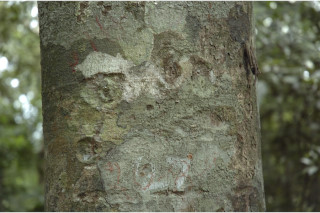

Images :



| Habit : | Large trees , up to 35 m tall. |
| Leaves : | Leaves simple , alternate , spiral , clustered at twig ends; petiole less than 0.5 cm long, stout, glabrous , planoconvex in cross section; lamina 6.5-19 x 1.8-7 cm, oblanceolate or spathulate , apex obtuse or rounded (slightly acuminate in young trees ), base cuneate to decurrent , margin entire , coriaceous , glabrous ; midrib flat above; secondary_nerves 12-18 pairs; tertiary_nerves reticulo-percurrent or broadly reticulate . |
| Inflorescence / Flower : | Inflorescence axillary or terminal panicles , 8-10 cm long, tomentose ; flowers bisexual , white. |
| Fruit and Seed : | Drupe , woody , globose , 3.8 cm across, 1-seeded . |